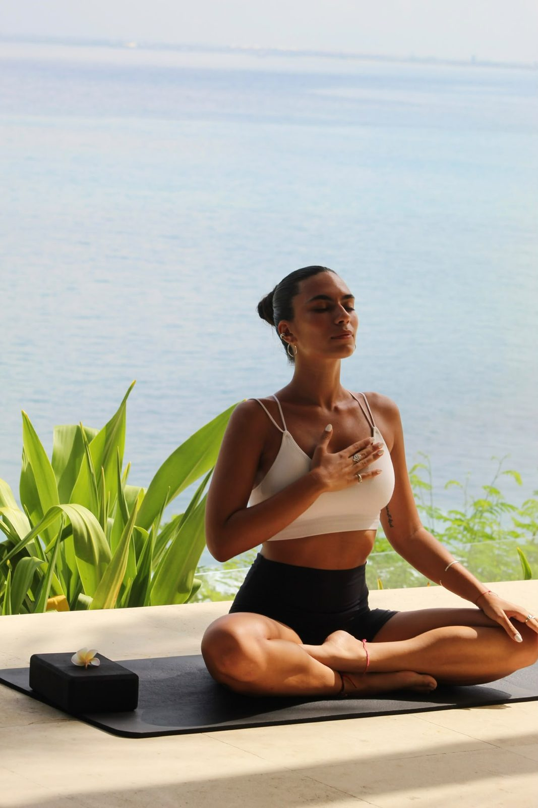

A vida que estás a construir é a vida que queres viver?
Estar ocupada não é o mesmo que viver com intenção.
Aquilo que quero conquistar.
Aquilo que não quero sacrificar pelo caminho.
As minhas escolhas de hoje aproximam-me dessa versão de mim?
O espaço onde vivemos influencia os nossos hábitos.
As pessoas à nossa volta influenciam as nossas escolhas.
A forma como trabalhamos molda a forma como vivemos.
Como falamos connosco e cuidamos de nós importa.
Qual destas áreas está a pedir mais atenção?
Autocuidado também é descanso, rotina, limites e relações.
Às vezes não nos falta vontade.
Falta-nos autorização para sermos também uma prioridade.
E se precisasses de escolher melhor o que merece o teu tempo?
O que precisa de atenção?
O que quero mudar, e porquê?
Qual é o primeiro passo possível?
Intenção sem uma escolha concreta é só um desejo bonito.
Escolhe uma ação pequena, concreta e possível.
Respirar. Alongar. Relaxar.
Viver com intenção também é saber parar.

Beatriz Caetano · Barbae Girls
Abre este mesmo link no computador da TV e no telemóvel (ambos com internet) e escolhe o papel de cada um.